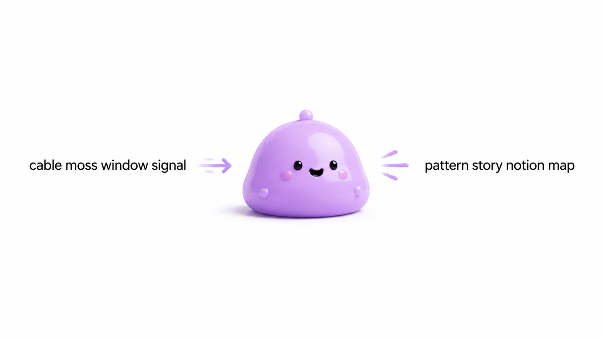
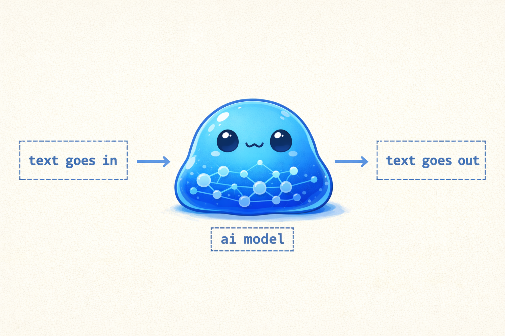
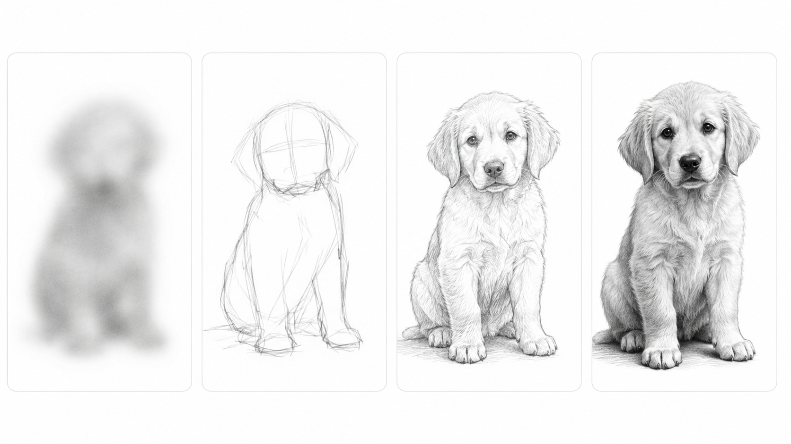
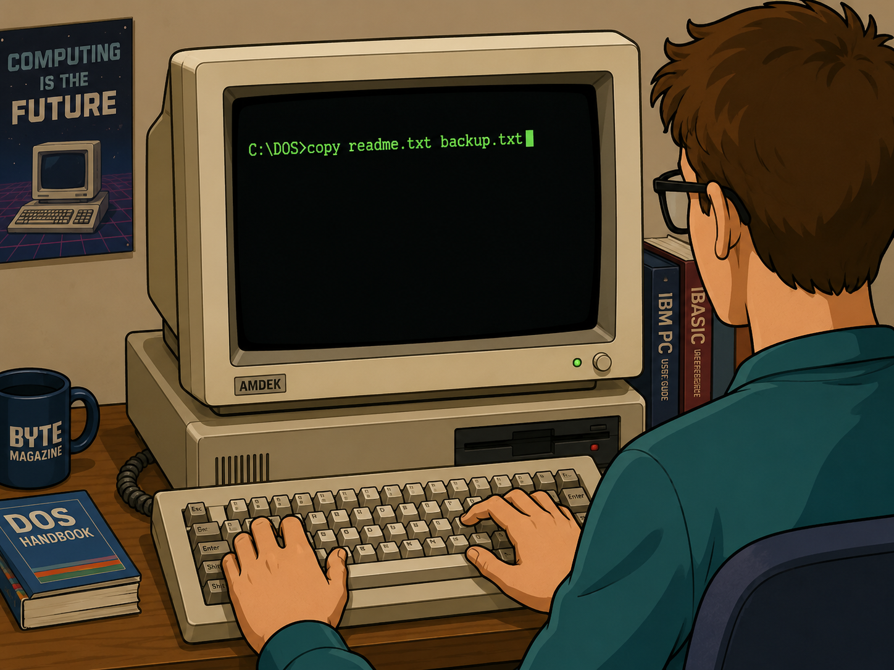
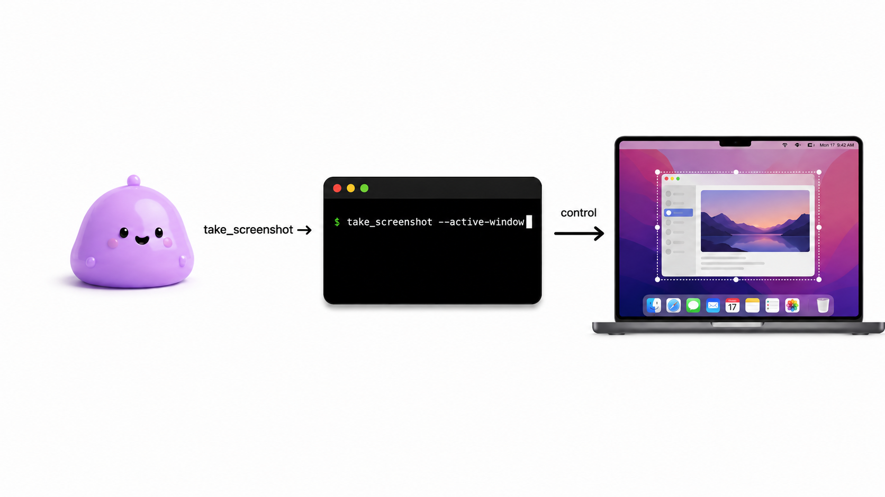
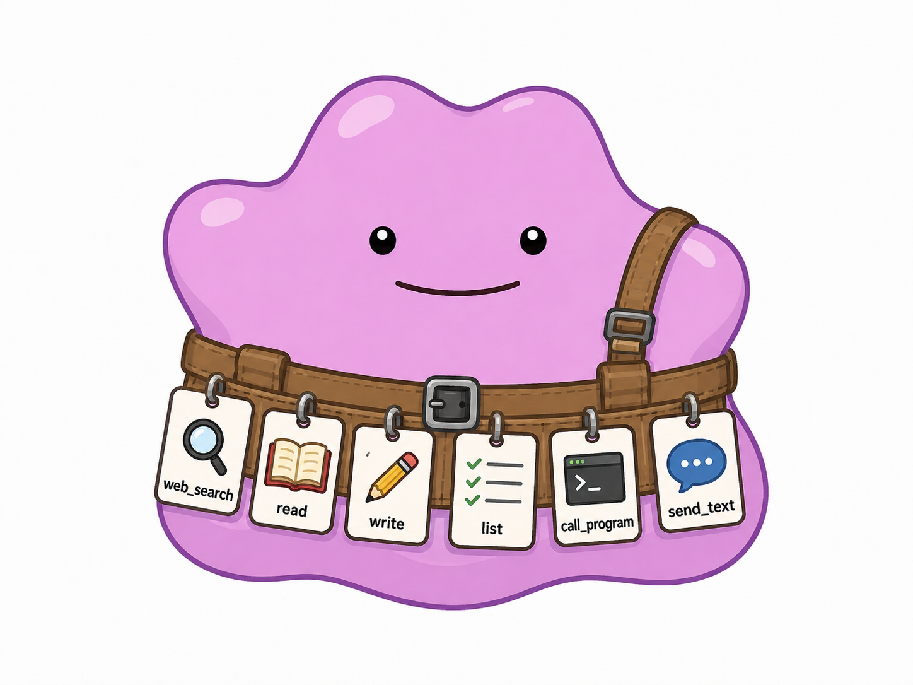
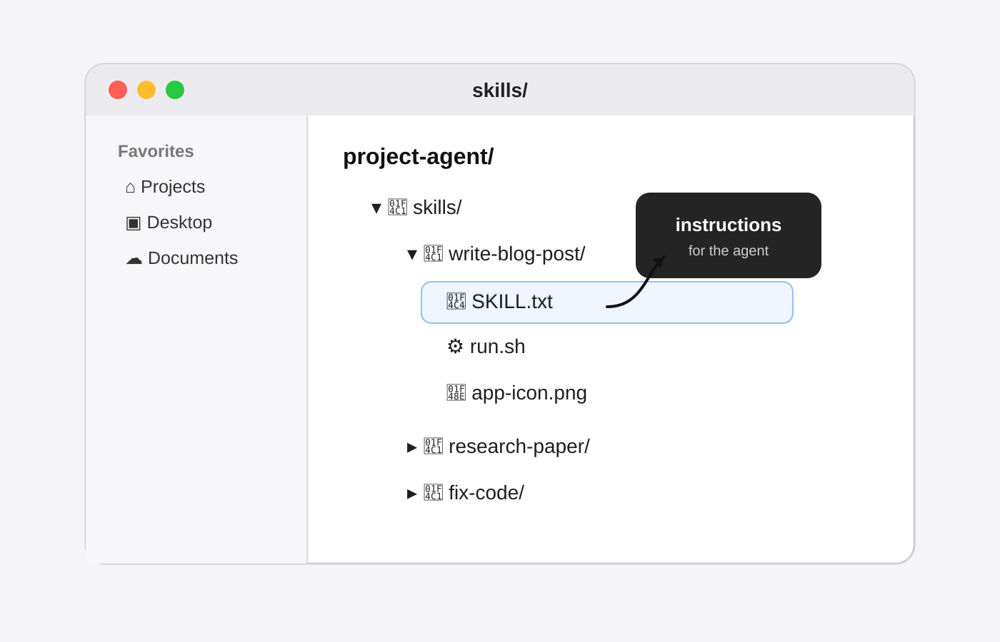

How to Use AI: What Matters
it's only predicting the next word.

it all starts here, it only has words
another way of thinking about it:
it's really putting words to action, (action in the way of meaning it produces words)

this is fundamentally what is going on. like that is it.....everything else is built up from that.
the external “what matters”
but what does that mean exactly?
the ai doesnt have an external 'what matters'
it only has an internal representation of 'what matters' in relation to the next words it's producing.
you need to provide the external 'what matters'.
- what to do
- what not to do
- provide context: information around the task
- outline precisely what you want
- you need to put a perimeter around your problem
prompts are usually too short
generally prompts are too short, you really want to dump in as much detail, context, and information as you can.
generally i find a nice back and forth style conversation, with gradual refinements to be effective and nice way of going about things.
like dump a bunch of data and stuff in it and then mold it like a clay vase on a spinning wheel.
take it step by step of what you want and refine it.

using small less capable models is a good way to learn actually. it makes you think deeper about how to get it to do what you want
it isnt an animal
ai doesnt have drives, it doesnt have the mechanics of survival and propogate yourself.
it's like a tiny little piece of our cortex, it isnt our subconscious or nervous system or any of the things that keep us alive.
there isnt the basic mechanics of those things and we dont know how they work.
agentic ai
originally computers were controlled via text only. think old school 70s, keyboard only, the world before gui's.



you can see that the ai directly generates the words that controls the computer via the command line.
skills/

skills are text files that explain to your ai how to do a certain task, so, it like just makes the ai agent more consistent by giving it precise directions.
skills also can have like programs that the agent can run, workflows, etc.
in some ways they are kinda like the new iphone apps.